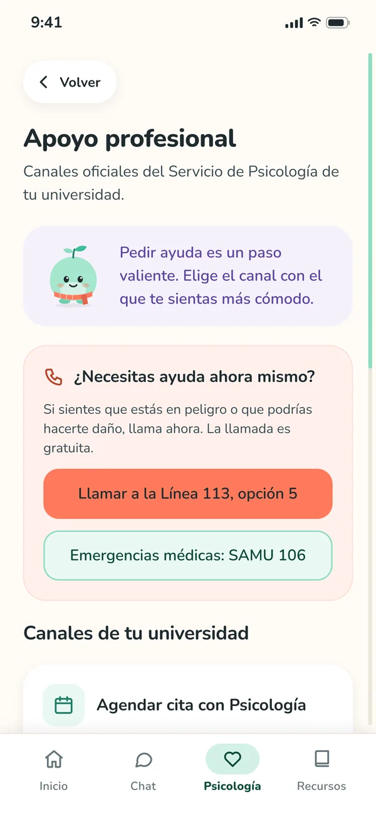
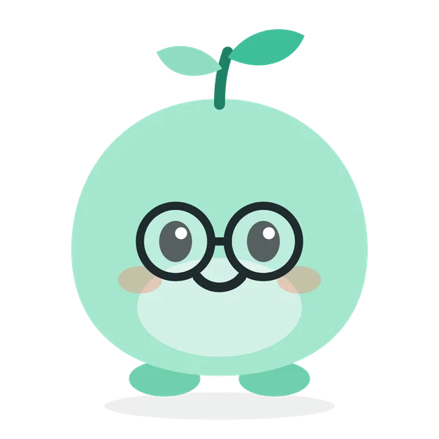

Entra
Con el correo de su universidad. Desde el inicio sabe que habla con una IA que orienta.
Lumi es el acompañante con IA de MenteSana. Escucha a los universitarios sin juicios y los acompaña hasta el servicio de psicología de su propia universidad.
Descubrir Lumi
Una app para el estudiante y un panel anónimo para la universidad. Estas son pantallas del prototipo, probado con estudiantes.
Con el correo de su universidad. Desde el inicio sabe que habla con una IA que orienta.

Lumi escucha sin juicios y propone algo pequeño: respirar u ordenar la semana.

Si lo necesita, Lumi le muestra cómo llegar al psicólogo de su universidad. Siempre puede decir «Ahora no».
Acercar a cada universitario a la ayuda psicológica que necesita, con un acompañante que escucha a cualquier hora y lo conecta con el servicio de su propia universidad.
Ser, al 2030, el primer paso hacia la ayuda psicológica en las universidades del Perú y de Latinoamérica.

Sin juicios y a cualquier hora, sin necesidad de cita.

Con pasos pequeños: respirar, ordenar la semana, descansar.

Hasta el psicólogo de su universidad, cuando el estudiante lo decide.

Que pedir ayuda deje de ser un tabú en la universidad.
Meta 3.4: promover la salud mental y el bienestar.
Que la salud mental no sea la razón para dejar los estudios.
Apoyo psicológico al alcance de todos los estudiantes.
Hoy, solo 1 de cada 10 universitarios llega al servicio de psicología de su universidad. Lumi existe para cambiar ese número.
universitarios llegó al servicio de su universidad.
no recibió atención psicológica en el semestre.
tiene ansiedad severa.
pensó seriamente en el suicidio o lo planificó.
Consorcio de Universidades (2025), 6 978 estudiantes de tres universidades privadas de Lima.